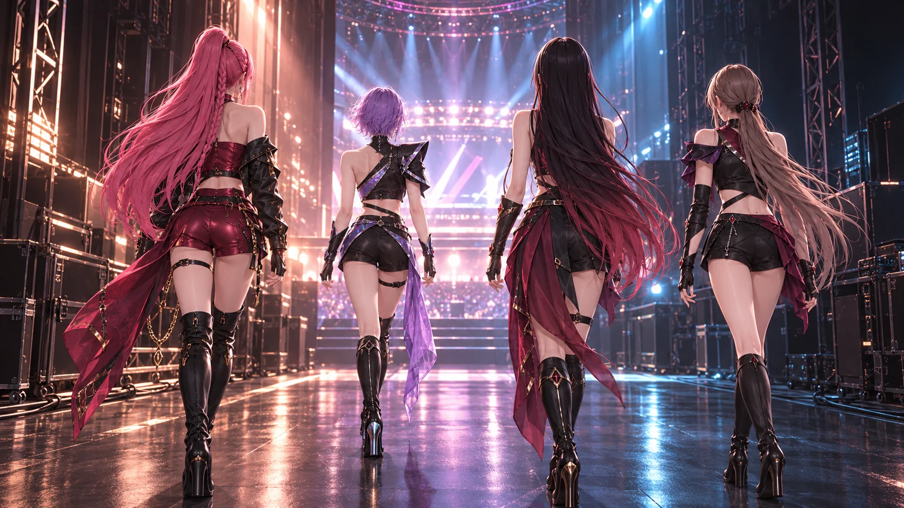
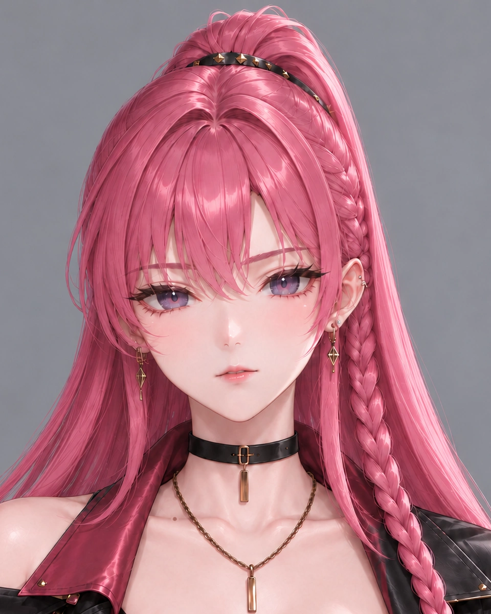
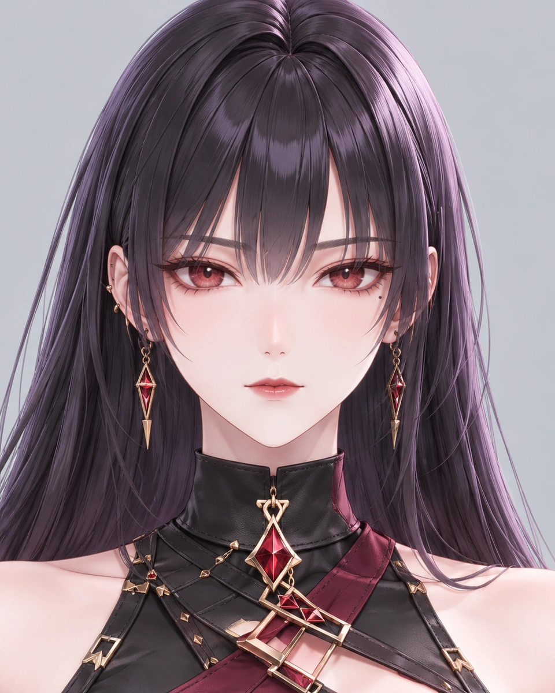
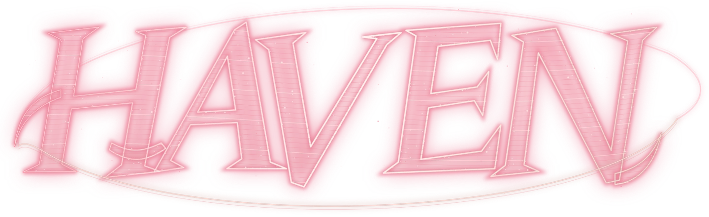
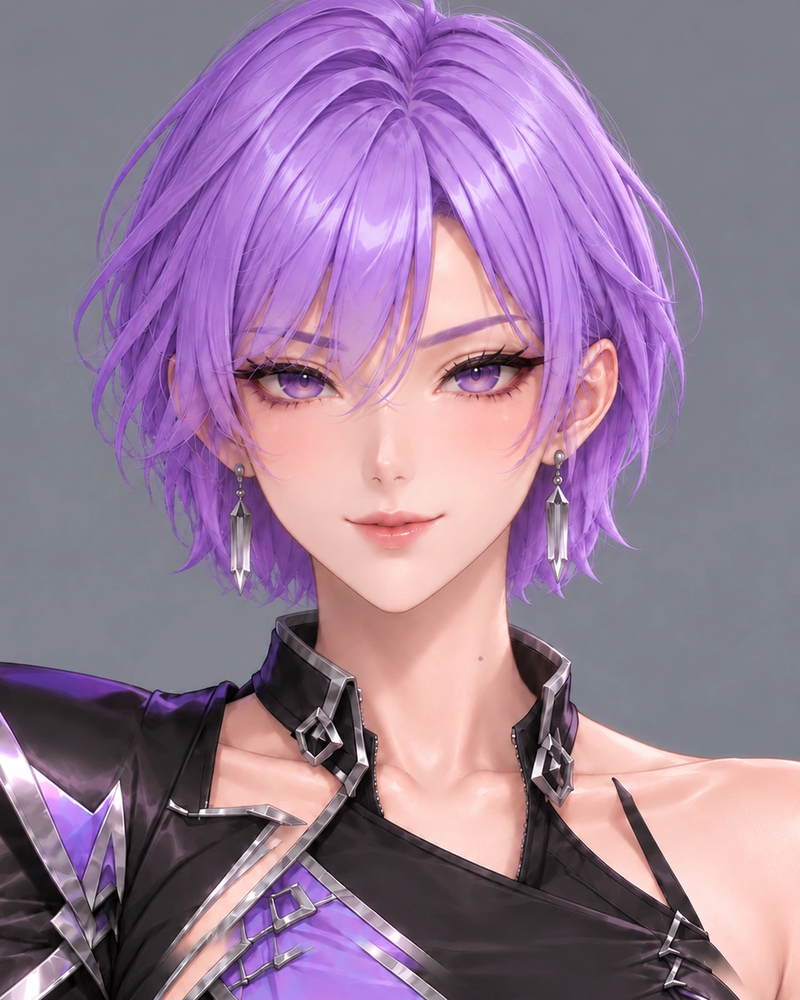
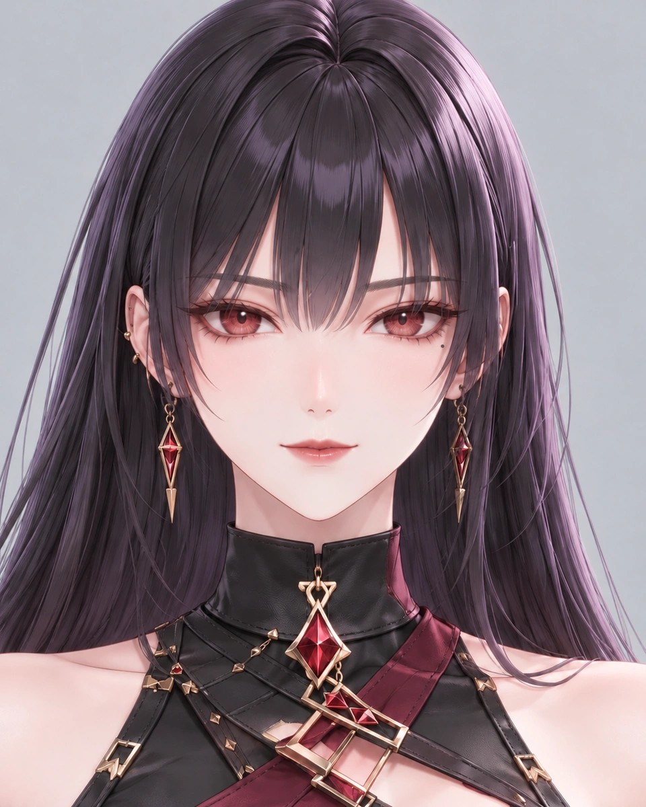
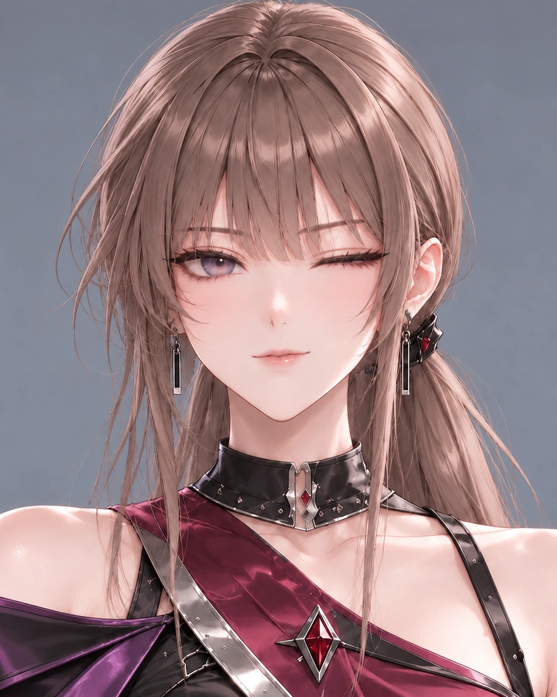

네 사람이 만드는, 다음 장면.
멤버를 선택해이야기를 만나보세요.



새 소식은 공식 채널에서 전할게요.
HAVEN의 공식 채널
이 사이트는 Google 태그 관리자와 Google Analytics를 통해 방문 정보를 분석합니다.
사이트에는 회원가입이나 문의 입력란이 없습니다. 이름·이메일·전화번호 등의 입력값을 분석 이벤트에 넣지 않습니다. 작은 멤버와의 상호작용은 로그인 없이 사용할 수 있습니다.
로컬 미리보기에서는 사이트 분석 이벤트를 보내지 않습니다.